[AIMS] Artificial Intelligence through Multimodal Signal Processing
Diffusion Transformers
Introdução aos DiTs: modelos de difusão que trocam a U-Net por um Transformer
Inspirado no artigo Scalable Diffusion Models with Transformers · William Peebles, Saining Xie
ICCV 2023, pp. 4195–4205 · UC Berkeley · New York University · Meta AI (FAIR)
ApresentaçãoJohsac Isbac Gomez Sanchez
Grupo de Estudos Camaleão
→ / espaço: avançar · ← voltar · F: tela cheia
[AIMS] Artificial Intelligence through Multimodal Signal Processing
Introdução ao “Diffusion Transformers (DiTs)”
Inspirado no artigo: Scalable Diffusion Models with Transformers
William Peebles, Saining Xie
ICCV 2023, pp. 4195–4205 · UC Berkeley · New York University · Meta AI (FAIR)
ApresentaçãoJohsac Isbac Gomez Sanchez
→ / espaço: avançar · ← voltar · F: tela cheia
versão anterior
Roteiro
Problemas em aberto — o que falta nos modelos generativos
Revisão da literatura — U-Net, difusão, Transformer, ViT, LDM
Motivação e impacto dos DiTs — o artigo, os autores, a proposta
Arquitetura do modelo — patches, blocos DiT, tamanhos
Resultados obtidos — FID, Gflops e escalabilidade
Extensão para outras áreas — 3D, fala e gestos
Conclusões — e limitações
Trabalhos futuros
Dificuldades encontradas — na pesquisa
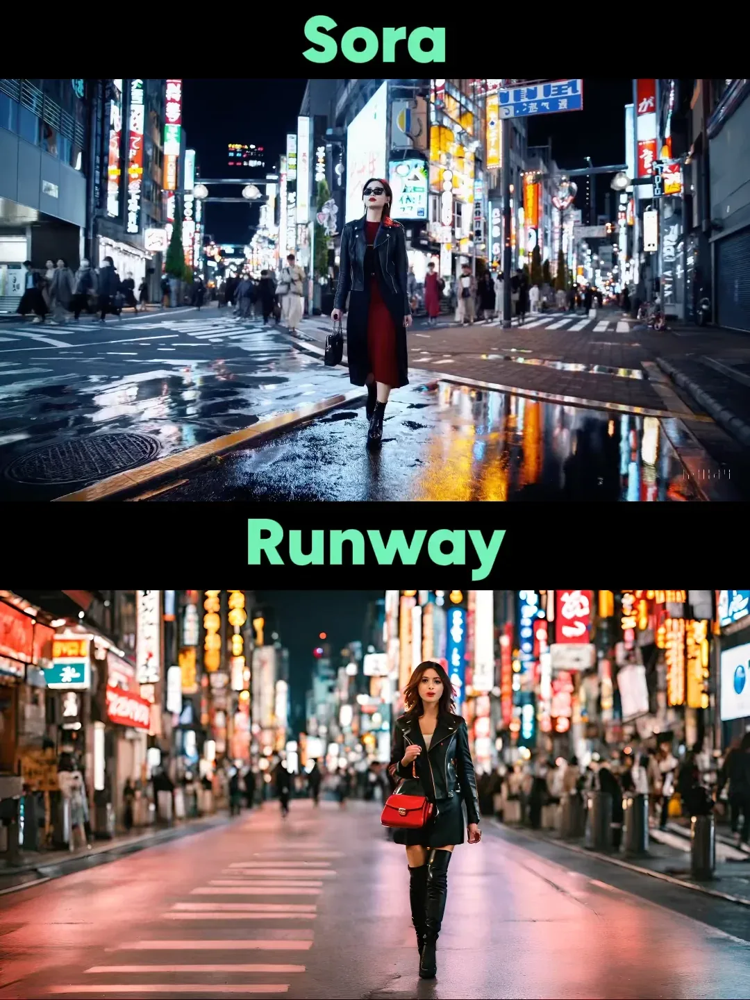
Geração de vídeo: Sora (OpenAI) × Runway. O Sora é construído sobre Diffusion Transformers.
Conteúdo
Problemas em aberto
Revisão da literatura
Motivação e impacto dos DiTs
Arquitetura do modelo
Resultados obtidos
A revolução DiT (2024–2026)
DiTs para gestos 3D
Conclusões
Trabalhos futuros
Dificuldades encontradas
Problemas em aberto
1Problemas em aberto em modelos de geração
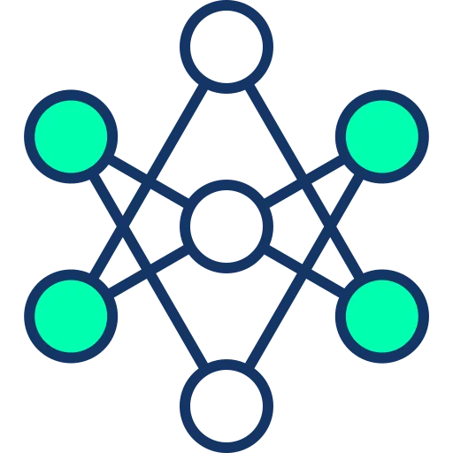
ArquiteturasReduzir a dependência de arquiteturas consolidadas
Novas áreasCriar novas oportunidades para descobertas em diferentes áreas: texto, imagem e sinais
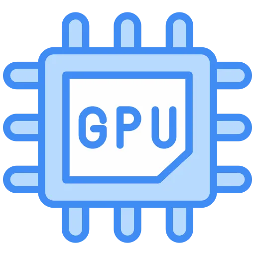
EficiênciaOferecer uma abordagem mais eficiente em termos computacionais
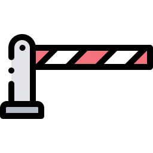
Barreiras entre áreasSuperar barreiras de descobertas cruzadas entre áreas como texto, imagem e sinais
Seção 2 de 10
Conteúdo
Problemas em aberto
Revisão da literatura
Motivação e impacto dos DiTs
Arquitetura do modelo
Resultados obtidos
A revolução DiT (2024–2026)
DiTs para gestos 3D
Conclusões
Trabalhos futuros
Dificuldades encontradas
Revisão da literatura · U-Net
2U-Net: segmentação de imagens
U-Net (2015) é uma rede convolucional com estrutura em “U”, usada para segmentação de imagens, com um encoder e um decoder simétricos conectados por saltos (skip connections).
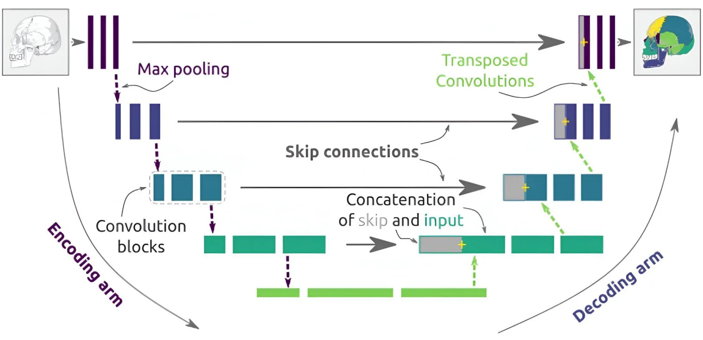
Braço de codificação, braço de decodificação e conexões de salto
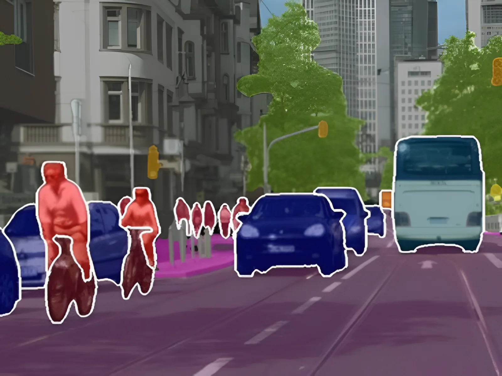
Exemplo de segmentação
Vide O. Ronneberger, P. Fischer, T. Brox. U-Net: Convolutional Networks for Biomedical Image Segmentation. MICCAI 2015.
Revisão da literatura · U-Net
2U-Net: encoder e decoder
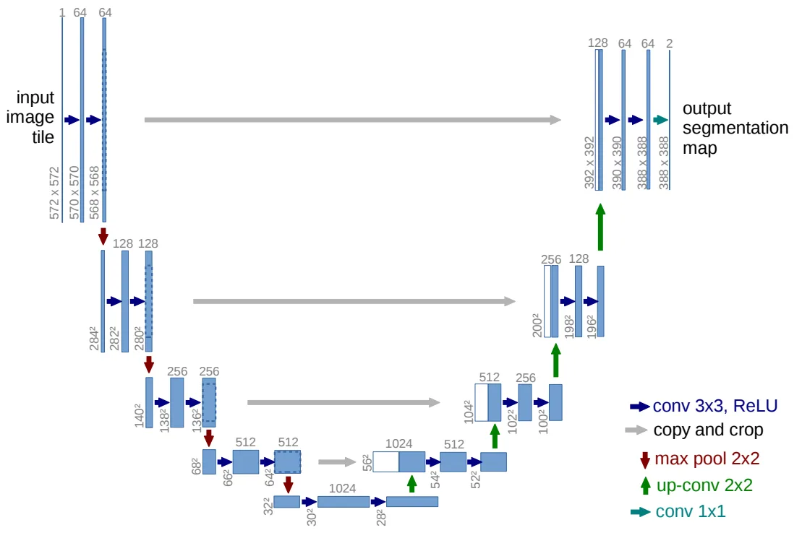
EncoderComprime a informação da imagem, extraindo características abstratas.
DecoderExpande essas características, restaurando a resolução para segmentação ou geração.
Vide O. Ronneberger, P. Fischer, T. Brox. U-Net: Convolutional Networks for Biomedical Image Segmentation. MICCAI 2015.
versão anteriorRevisão da literatura · Difusão
2Geração de imagens com modelos de difusão
Modelo de difusão (2020): modelo generativo que adiciona ruído progressivamente às imagens e usa uma U-Net para aprender a reverter o ruído, passo a passo.
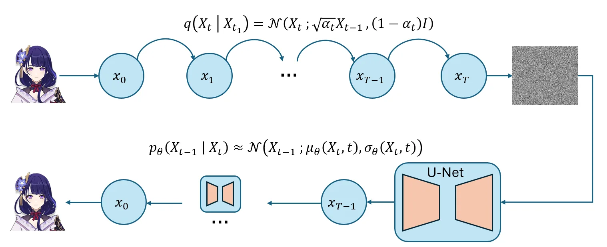
Forward diffusionDo input x₀ ao ruído puro x_T: adiciona ruído gaussiano em cada passo.
Reverse diffusionDo ruído x_T ao output x₀: a U-Net prevê e remove o ruído em cada passo.
Vide J. Ho, A. Jain, P. Abbeel. Denoising Diffusion Probabilistic Models. NeurIPS 2020.
versão anteriorRevisão da literatura · Difusão
2Gerando uma amostra por remoção de ruído
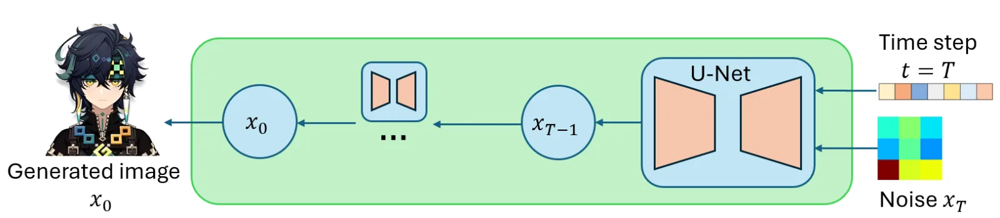
Reverse diffusion
Reverse diffusionA geração começa no ruído e o reverte passo a passo, guiada pela U-Net e pelo timestep.
Timestep tIndica quanto ruído remover em cada passo: informa quanto ruído está presente na imagem naquele momento.
Vide J. Ho, A. Jain, P. Abbeel. Denoising Diffusion Probabilistic Models. NeurIPS 2020.
Revisão da literatura · Difusão
2Denoising interativo: o que o modelo decide em cada passo?
90% de ruído · t alto
composição global: onde está a pessoa?
50% de ruído
formas e cores principais
10% de ruído · t baixo
texturas finas: rosto, cabelo, reflexos
ruído: 100%
Em qual passo o modelo decide a composição global? E em qual decide as texturas finas?
versão anteriorRevisão da literatura · Transformer
2Transformer em Processamento de Linguagem Natural
Transformer (2017) revolucionou o NLP ao processar longas sequências de texto com autoatenção, eliminando a necessidade de redes recorrentes.
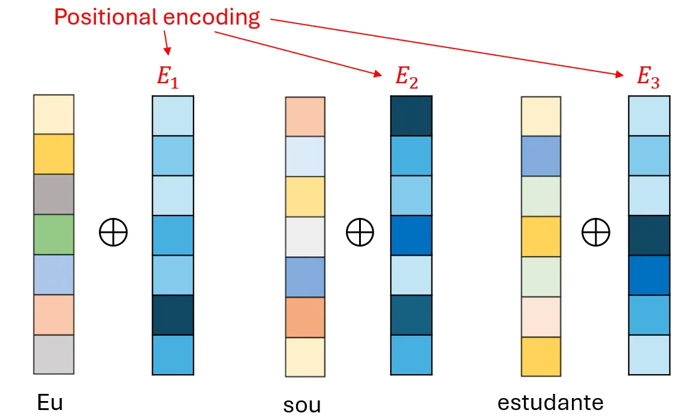
Por exemplo, o input: “Eu sou estudante”
O positional encoding introduz a ordem dos tokens na sequência, permitindo capturar relações posicionais entre eles.
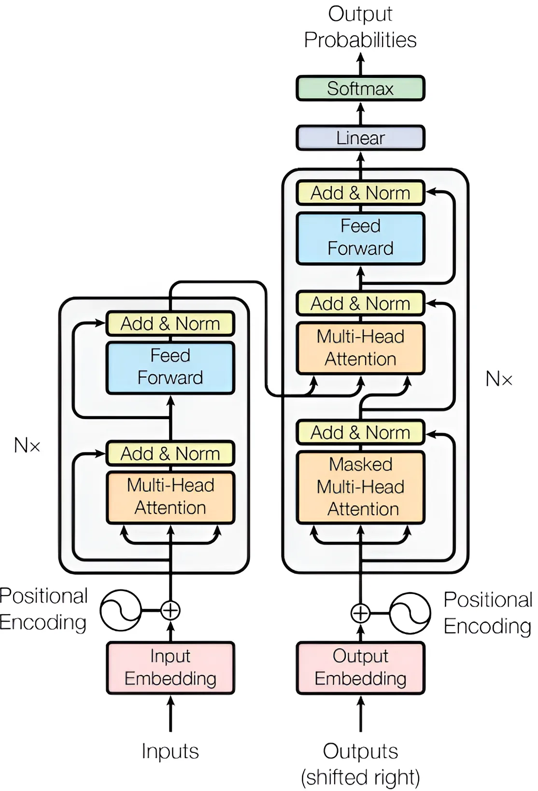
Vide A. Vaswani et al. Attention Is All You Need. NeurIPS 2017.
versão anteriorRevisão da literatura · Transformer
2RNNs × mecanismo de autoatenção
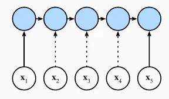
RNNs: um token de cada vez
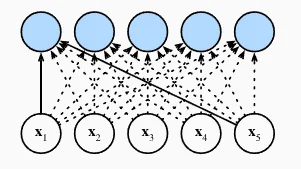
Autoatenção: todos os tokens ao mesmo tempo
O mecanismo de atenção supera limitações como:
Processa as sequências simultaneamente
Captura relações distantes
Paralelismo
Interações complexas
Vide A. Vaswani et al. Attention Is All You Need. NeurIPS 2017.
versão anteriorRevisão da literatura · Transformer
2Encoder e decoder: aplicações
Encoder (esquerda) · Decoder (direita)
EncoderClassificação (ex.: BERT), segmentação de imagens, detecção de objetos, análise de sentimentos, DiTs, entre outras.
DecoderTradução automática, geração de texto (ex.: GPT), resumo automático e modelos de texto para imagem (ex.: DALL·E).
Revisão da literatura · Transformer
2Transformer por dentro: posição, Q, K, V e atenção
Revisão da literatura · Transformer
2Encoder, decoder ou os dois? Depende da tarefa
versão anteriorRevisão da literatura · ViT
2Transformers em visão computacional (ViT)
ViTs (2020) aplicam Transformers às imagens: dividem a imagem em fragmentos (patches), processam cada um como um token e usam atenção para capturar relações espaciais de longo alcance.
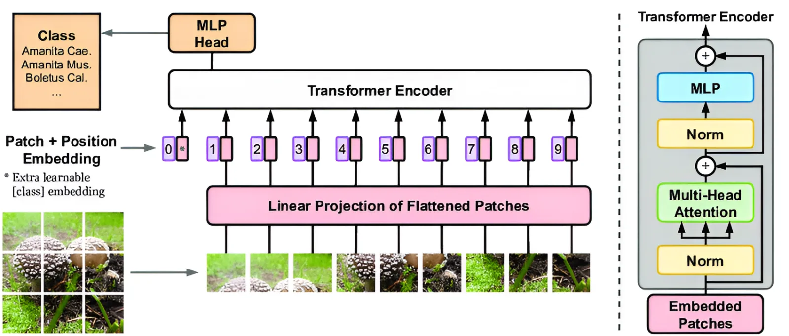
Vide A. Dosovitskiy et al. An Image is Worth 16x16 Words: Transformers for Image Recognition at Scale. ICLR 2021.
Revisão da literatura · ViT
2ViT: só o encoder do Transformer
Vide A. Dosovitskiy et al. An Image is Worth 16x16 Words: Transformers for Image Recognition at Scale. ICLR 2021.
versão anteriorRevisão da literatura · LDM
2Modelos de difusão latente (LDM)
LDM (2022) treinam a difusão num espaço latente comprimido, em vez do espaço de pixels, e introduzem um mecanismo de condicionamento para controlar a geração com informações adicionais.
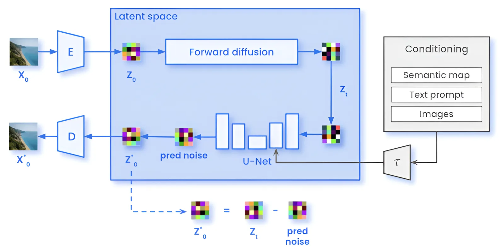
Vide R. Rombach et al. High-Resolution Image Synthesis with Latent Diffusion Models. CVPR 2022.
Revisão da literatura · LDM
2Por que o DiT precisa do espaço latente?
A autoatenção compara todos os tokens com todos: custo O(N²) no número de tokens N. Escolha a resolução:
versão anteriorRevisão da literatura · LDM
2Gerando uma amostra com condicionamento
Com o condicionamento, o modelo gera imagens a partir de entradas adicionais específicas, usando técnicas de amostragem como o Classifier-Free Diffusion Guidance.
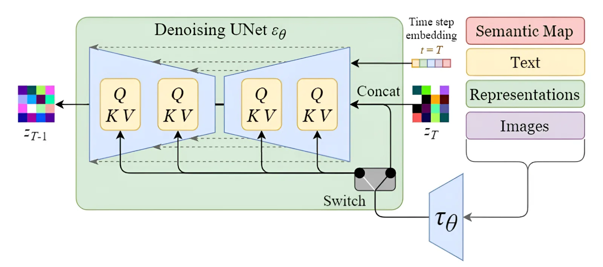
Para permitir o condicionamento, a U-Net usa atenção cruzada (cross-attention) durante o denoising.
Vide J. Ho, T. Salimans. Classifier-Free Diffusion Guidance. 2021.
Revisão da literatura · LDM
2LDM: como a condição entra na U-Net
Vide R. Rombach et al. High-Resolution Image Synthesis with Latent Diffusion Models. CVPR 2022 · J. Ho, T. Salimans. Classifier-Free Diffusion Guidance. 2021.
Perguntas em aberto
2Tudo foi resolvido com modelos de difusão?
FlexibilidadeAté que ponto os modelos de difusão são flexíveis o suficiente para se adaptar a diferentes áreas e tarefas?
EscalabilidadeA eficiência computacional dos modelos de difusão propostos é adequada para uma escalabilidade real?
Seção 3 de 10
Conteúdo
Problemas em aberto
Revisão da literatura
Motivação e impacto dos DiTs
Arquitetura do modelo
Resultados obtidos
A revolução DiT (2024–2026)
DiTs para gestos 3D
Conclusões
Trabalhos futuros
Dificuldades encontradas
versão anteriorMotivação e impacto
3O artigo e seu impacto
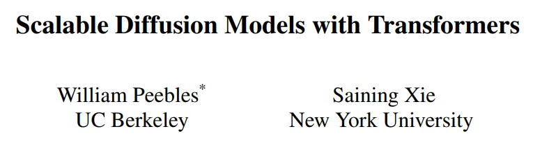
Publicado em
Proceedings of the IEEE/CVF International Conference on Computer Vision (ICCV), 2023, pp. 4195–4205
Qualis CAPES
A1 (nota máxima)
Citações
800 (até 26/09/2024)
Organização
Meta AI, equipe FAIR
Motivação e impacto · atualizado
3O artigo e seu impacto, em outubro de 2026
Publicado em
ICCV 2023, Paris · pp. 4195–4205
Qualis CAPES
A1
Organização
Meta AI (FAIR), UC Berkeley, NYU
set/2024800
out/20267.914
Citações. 2024: Google Scholar (versão anterior desta apresentação). 2026: Semantic Scholar, consultado em 28/10/2026.
Em dois anos, quase 10× mais citações: o DiT virou a base de SD3, FLUX, Sora, Wan, HunyuanVideo e de modelos de movimento.
versão anteriorMotivação e impacto
3Os autores
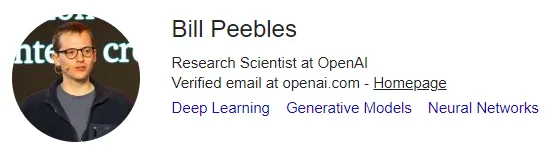
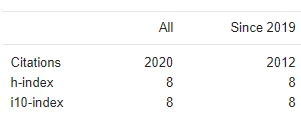
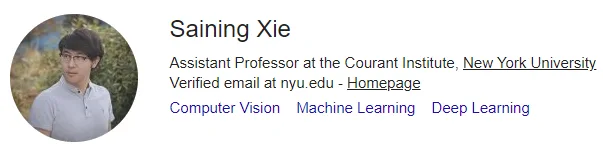
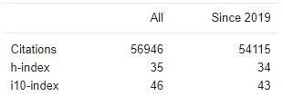
Perfis do Google Scholar no momento da preparação da apresentação (setembro de 2024).
Motivação e impacto · atualizado
3Os autores, em 2026
William (Bill) Peebles
Doutorado em UC Berkeley; o DiT nasceu num estágio na Meta AI (FAIR)
Entrou na OpenAI em 2023 e liderou o Sora, construído sobre DiT
Mar/2026: a OpenAI descontinua o Sora; abr/2026: Peebles deixa a OpenAI
Saining Xie
Professor assistente no Courant Institute, New York University
2026: cofundador e Chief Science Officer da AMI Labs, startup de “world models” de Yann LeCun
Coautor de ResNeXt, ConvNeXt, SiT e DiT
Fontes: TechCrunch (17/04/2026) sobre a saída de Peebles; anúncio da AMI Labs (2026) sobre Saining Xie.
Motivação e impacto
3Principais motivações dos DiTs
U-NetDependência da arquitetura U-Net nos modelos de difusão
TransformersO sucesso dos Transformers em outras áreas: texto, imagem e sinais
EficiênciaBuscar modelos de difusão mais eficientes computacionalmente
EscalabilidadeFalta de escalabilidade nos modelos de difusão baseados em U-Net
Motivação e impacto
3Proposta do artigo
1 · Nova classe de modelosModelos de difusão baseados em Transformers, substituindo a arquitetura U-Net.
2 · EscalabilidadeMostrar que a qualidade das imagens melhora quando o modelo cresce: Transformer mais profundo/largo ou mais tokens de entrada.
Seção 4 de 10
Conteúdo
Problemas em aberto
Revisão da literatura
Motivação e impacto dos DiTs
Arquitetura do modelo
Resultados obtidos
A revolução DiT (2024–2026)
DiTs para gestos 3D
Conclusões
Trabalhos futuros
Dificuldades encontradas
Arquitetura do modelo
4A ideia: trocar a U-Net por um Transformer
Diffusion Transformers (DiTs, 2023) substituem a U-Net dos modelos de difusão dentro do espaço latente.
U-NetTransformer
Vide W. Peebles, S. Xie. Scalable Diffusion Models with Transformers. ICCV 2023.
versão anteriorArquitetura do modelo
4Arquitetura interna dos DiTs
Substituição da U-Net pelo Transformer: o ruído latente é fragmentado, recebe positional encoding e passa por N blocos DiT, condicionados pelo timestep e pelo rótulo.
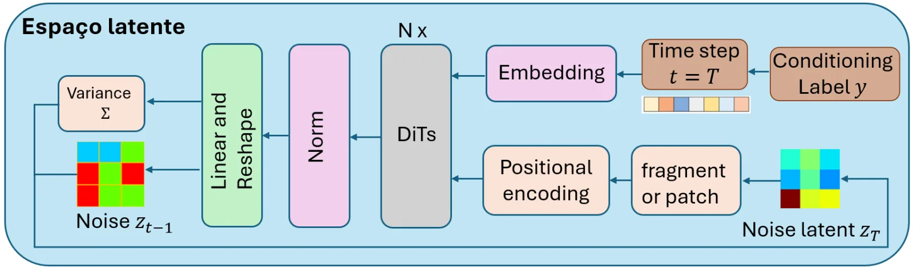
Vide W. Peebles, S. Xie. Scalable Diffusion Models with Transformers. ICCV 2023.
Arquitetura do modelo · revisada
4Arquitetura interna dos DiTs (versão corrigida)
versão anteriorArquitetura do modelo
4Fragmentação da imagem: o bloco “fragment or patch”
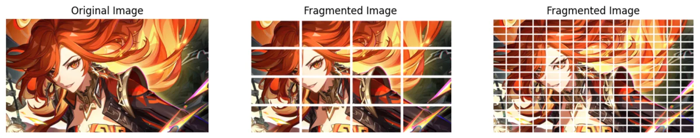
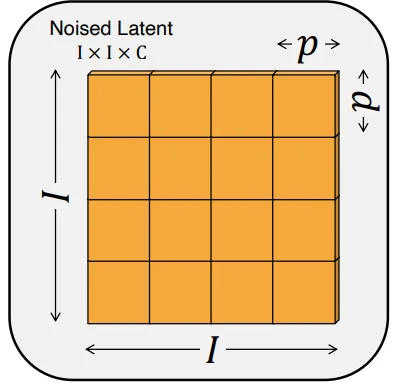
→
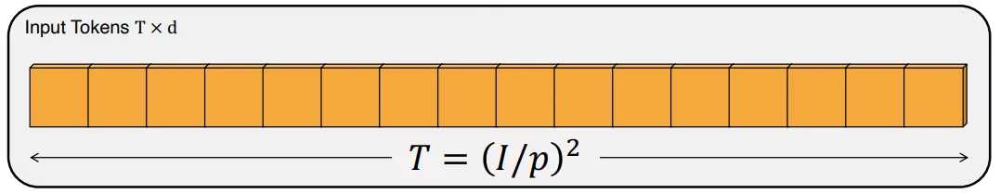
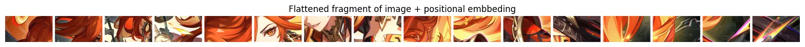
Patch + positional embedding
Patches menores (p menor) → mais tokens: T = (I/p)². Mais tokens = mais custo, mas também mais detalhe.
Arquitetura do modelo · revisada
4Patchify passo a passo: do latente aos tokens
Arquitetura do modelo
4Três variantes do bloco DiT
Os autores propõem três variantes: 1) adaLN-Zero, 2) Cross-Attention e 3) In-Context Conditioning, para abordar diferentes aspectos da geração de imagens.
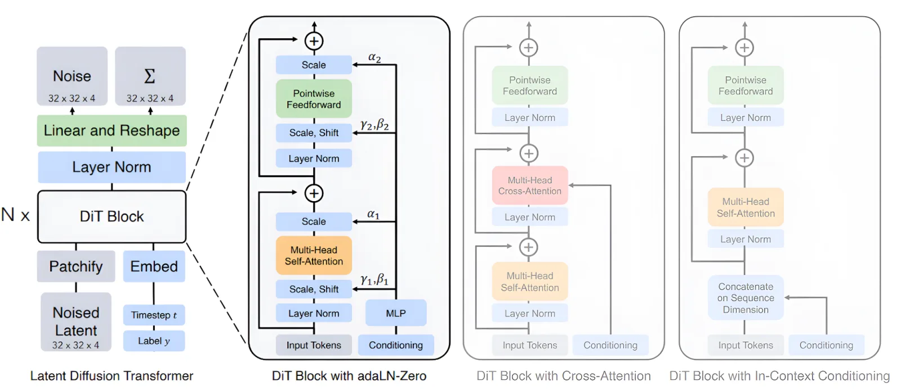
Vide W. Peebles, S. Xie. Scalable Diffusion Models with Transformers. ICCV 2023.
Arquitetura do modelo · bloco 1
4Bloco DiT: adaLN-Zero
Arquitetura do modelo · bloco 2
4Bloco DiT: Cross-Attention
Arquitetura do modelo · bloco 3
4Bloco DiT: In-Context Conditioning
Arquitetura do modelo
4Tamanhos dos DiTs
Os autores propõem 4 tamanhos: Small (S), Base (B), Large (L) e XLarge (XL).
Modelo
Camadas N
Dimensão oculta d
Cabeças de atenção
Gflops (I = 32, p = 4)
DiT-S
12
384
6
1.4
DiT-B
12
768
12
5.6
DiT-L
24
1024
16
19.7
DiT-XL
28
1152
16
29.1
Cada tamanho varia em: 1) número de camadas do Transformer, 2) dimensionalidade dos tokens, 3) número de cabeças de atenção e 4) Gflops: bilhões de operações de ponto flutuante por passada (forward pass) da rede.
Fonte Tabela 1 de W. Peebles, S. Xie. Scalable Diffusion Models with Transformers. ICCV 2023.
Seção 5 de 10
Conteúdo
Problemas em aberto
Revisão da literatura
Motivação e impacto dos DiTs
Arquitetura do modelo
Resultados obtidos
A revolução DiT (2024–2026)
DiTs para gestos 3D
Conclusões
Trabalhos futuros
Dificuldades encontradas
Resultados obtidos
5Avaliação: FID × Gflops
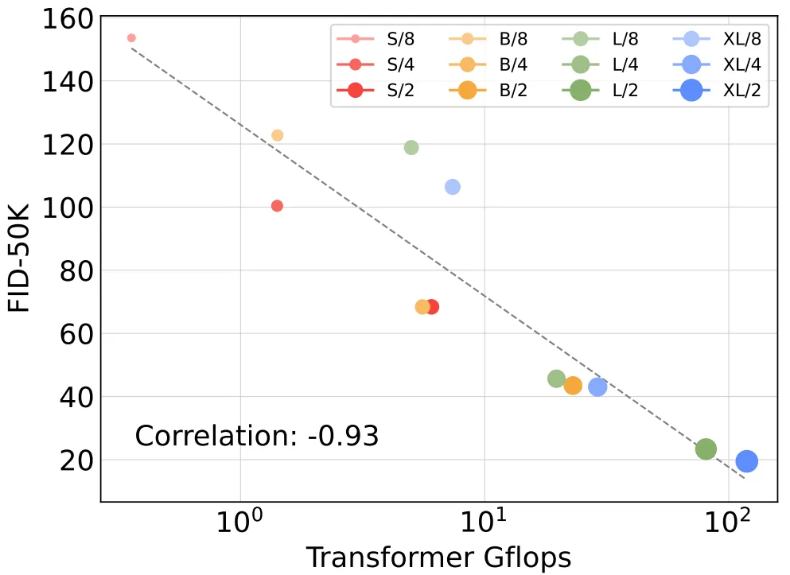
Os Gflops do Transformer estão fortemente correlacionados com o FID (correlação −0,93).
Mede a qualidade das imagens geradas comparando a distribuição estatística das imagens reais (r) e geradas (g): médias μ e covariâncias Σ. Quanto menor, melhor.
S/8, S/4, S/2… A letra é o tamanho do modelo; o número depois da barra é o tamanho do fragmento p. Patch menor → mais tokens → mais Gflops → FID menor.
Fonte Figura 1 de W. Peebles, S. Xie. Scalable Diffusion Models with Transformers. ICCV 2023.
Resultados obtidos
5Resultados da escalabilidade dos DiTs
Aumentando o tamanho do Transformer →
Diminuindo o tamanho dos fragmentos →
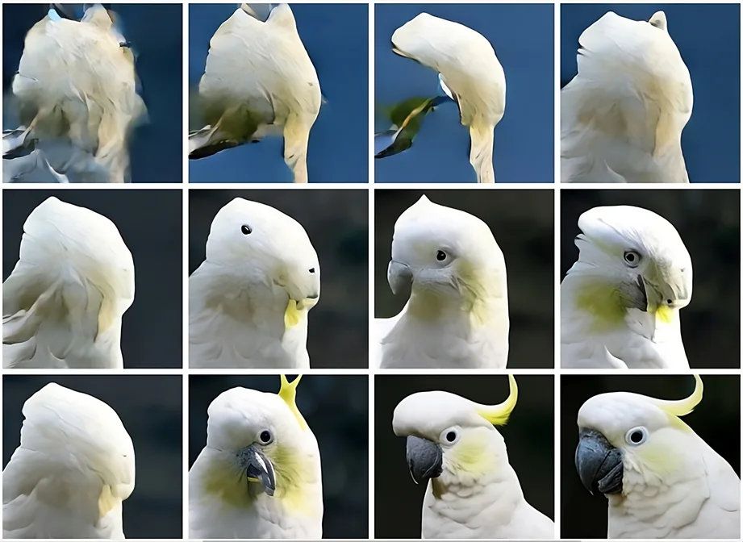
Resultados obtidos
5Conclusões do artigo
Os Transformers podem substituir efetivamente a U-Net em modelos de difusão.
Os DiTs se adaptam bem ao aumento da complexidade do Transformer e à tokenização em fragmentos menores, melhorando os resultados.
Os autores propõem que os DiTs se tornem a arquitetura padrão para trabalhos futuros em modelos de difusão.
Seção 6 de 10
Conteúdo
Problemas em aberto
Revisão da literatura
Motivação e impacto dos DiTs
Arquitetura do modelo
Resultados obtidos
A revolução DiT (2024–2026)
DiTs para gestos 3D
Conclusões
Trabalhos futuros
Dificuldades encontradas
A revolução DiT
6De um artigo à espinha dorsal da IA generativa
A revolução DiT
6Do DDPM ao Flow Matching
A revolução DiT
6O mesmo bloco, muitos sinais
Muda o que é um token; o Transformer de difusão continua o mesmo.
Imagemtoken = patch 2D do latenteDiT, SD3 e FLUX (MMDiT)
Vídeotoken = patch espaço-temporalSora, Movie Gen, HunyuanVideo, Wan
Áudiotoken = quadro do latente de áudioex.: Stable Audio Open
Forma 3Dtoken = patch de voxelsDiT-3D (próximas lâminas)
Movimentotoken = instante de poseHY-Motion 1.0: DiT + flow matching, >1B
Gestos com falatoken = instante de gestoDyaDiT, GestureHYDRA, Flow-DiT UNICAMP
Extensão para outras áreas · 3D
6DiT-3D: geração de formas 3D
DiT-3D (2023) aplica os DiTs à geração de formas 3D, usando nuvens de pontos voxelizadas para produzir geometrias detalhadas, com Transformers no lugar da U-Net.
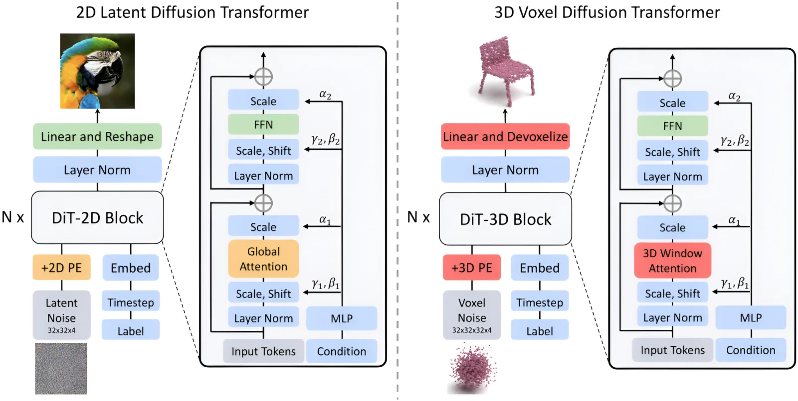
Vide S. Mo et al. DiT-3D: Exploring Plain Diffusion Transformers for 3D Shape Generation. NeurIPS 2023.
Extensão para outras áreas · 3D
6Resultados do DiT-3D
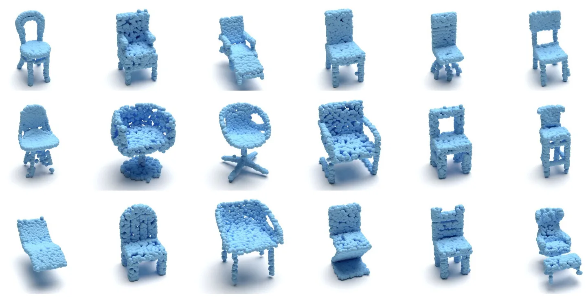
Exemplos de nuvens de pontos 3D diversas produzidas pelo DiT-3D.
Vide S. Mo et al. DiT-3D: Exploring Plain Diffusion Transformers for 3D Shape Generation. NeurIPS 2023.
Seção 7 de 10
Conteúdo
Problemas em aberto
Revisão da literatura
Motivação e impacto dos DiTs
Arquitetura do modelo
Resultados obtidos
A revolução DiT (2024–2026)
DiTs para gestos 3D
Conclusões
Trabalhos futuros
Dificuldades encontradas
Extensão para outras áreas
7Perguntas filosóficas
Outras áreasPodemos aplicar os DiTs a outras áreas, como áudio, vídeo e gestos?
ModificaçõesQue modificações ou extensões à arquitetura DiT seriam necessárias para alcançar desempenho comparável ou superior aos métodos existentes nessas áreas?
CondicionamentoQual seria o papel do condicionamento na geração de áudio ou gestos, onde as condições mudam ao longo do tempo? Ex.: tom, estilo, prosódia e ritmo no áudio; postura, expressões e movimentos nos gestos.
DiTs para gestos 3D
7DiT: um framework para sequências contínuas
Extensão para outras áreas
E os DiTs para gestos corporais, como seriam?
DiTs para gestos 3D
7Como se parametriza um gesto?
Extensão para outras áreas · fala e gestos
7DiT para gestos guiados pela fala
DiT Gesture Synthesis (2024) gera gestos personalizados a partir da fala, usando inferência automática de características fuzzy para sincronizar os movimentos do corpo com o áudio em tempo real.
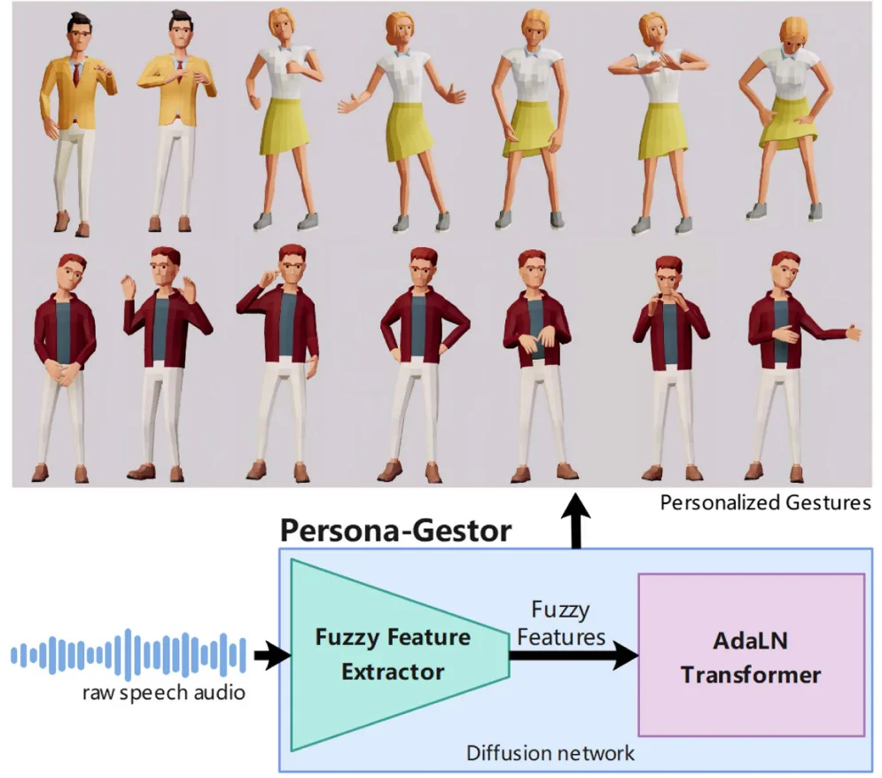
Vide F. Zhang et al. Speech-Driven Personalized Gesture Synthetics: Harnessing Automatic Fuzzy Feature Inference. 2024.
Extensão para outras áreas · fala e gestos
7Arquitetura do Persona-Gestor
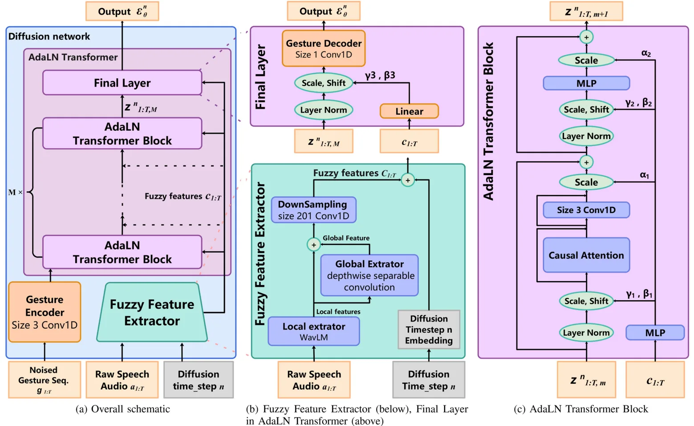
Vide F. Zhang et al. Speech-Driven Personalized Gesture Synthetics: Harnessing Automatic Fuzzy Feature Inference. 2024.
DiTs para gestos 3D · GENEA 2023
7DiffuseStyleGesture+: Transformer como denoiser de gestos
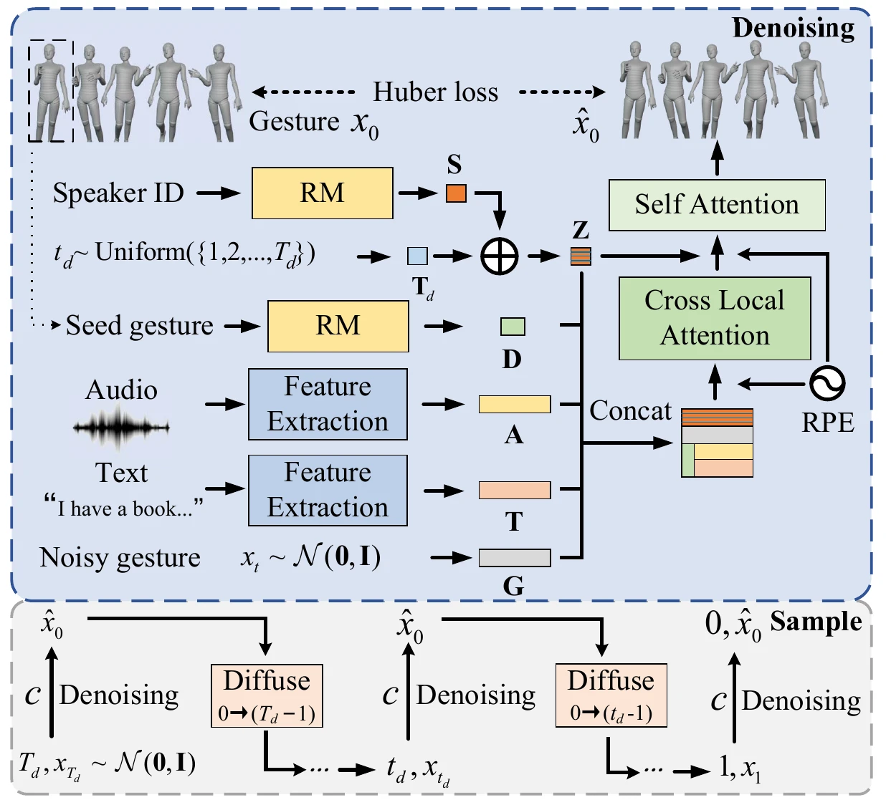
Vide S. Yang, H. Xue, Z. Wu et al. The DiffuseStyleGesture+ entry to the GENEA Challenge 2023. ICMI 2023.
DiTs para gestos 3D · GENEA 2026
7Flow-DiT da UNICAMP: o pipeline
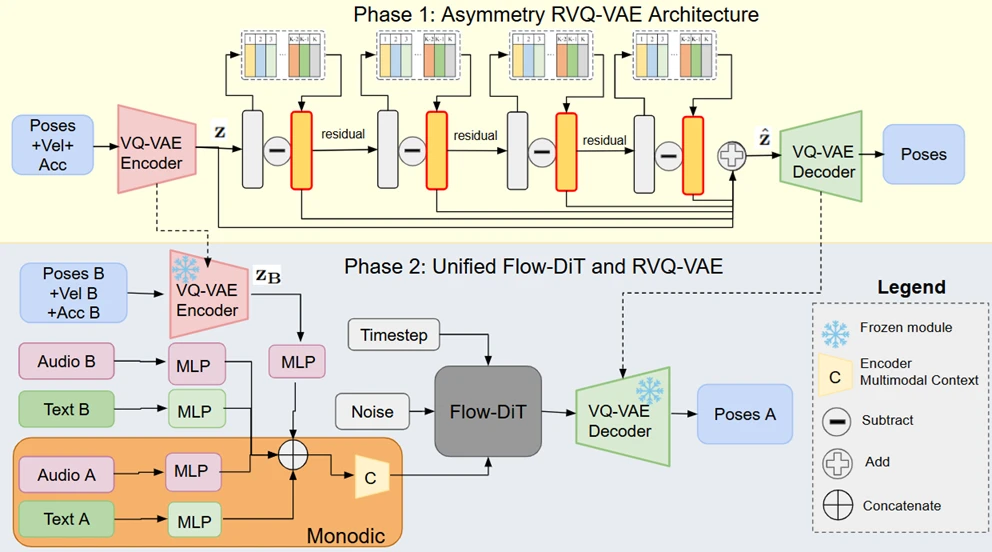
Vide J. I. G. Sanchez, P. D. P. Costa. A Unified Flow-Matching DiT with Direct Continuous Decoding for Co-Speech Gesture Generation. GENEA Challenge 2026 · github.com/AI-Unicamp/UNICAMP-Gesture-Generation
DiTs para gestos 3D · GENEA 2026
7Flow-DiT da UNICAMP: um bloco por dentro
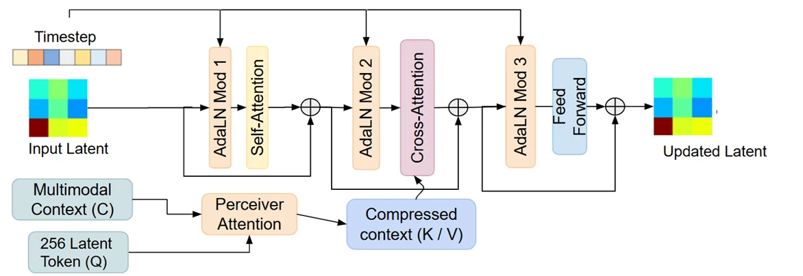
Vide J. I. G. Sanchez, P. D. P. Costa. GENEA Challenge 2026, Figura 2.
DiTs para gestos 3D · GENEA 2026
7Inferência: Euler, CFG desacoplado e VAD
DiTs para gestos 3D · GENEA 2026
7Resultados oficiais do GENEA 2026
Seção 8 de 10
Conteúdo
Problemas em aberto
Revisão da literatura
Motivação e impacto dos DiTs
Arquitetura do modelo
Resultados obtidos
A revolução DiT (2024–2026)
DiTs para gestos 3D
Conclusões
Trabalhos futuros
Dificuldades encontradas
versão anteriorConclusões
8Limitações
Foco em imagensA maioria das pesquisas com DiTs se concentra na geração de imagens e não se aprofunda em áudio, vídeo e gestos.
ReprodutibilidadeNão foram encontrados trabalhos públicos (GitHub) reproduzíveis, ao menos para áudio e gestos.
TokensA qualidade dos resultados depende em grande parte da escalabilidade dos tokens.
CustoApesar das melhorias na escalabilidade, os DiTs ainda têm um alto custo computacional.
Conclusões · atualizado
8Limitações, em outubro de 2026
Custo O(N²)Vídeo longo e alta resolução ainda são caros; o Sora foi descontinuado em 2026 em parte pelo custo de computação.
Muitos passosMesmo com flow matching, gerar exige dezenas de avaliações da rede (o CFG multiplica isso).
Dados de movimentoImagens: bilhões. Movimento: milhares de horas (HY-Motion ≈ 3.000 h; Seamless ≈ 147 h no GENEA 2026).
Diádico e semânticoNo GENEA 2026, todos os sistemas ficam muito abaixo da captura real em reação ao interlocutor e em gestos semânticos.
MétricasFID e FGD nem sempre concordam com a percepção humana; avaliação subjetiva continua indispensável.
ReprodutibilidadeMelhorou: Wan, HunyuanVideo, HY-Motion e o Flow-DiT da UNICAMP são abertos, mas os maiores sistemas seguem fechados.
versão anteriorConclusões
8Conclusões
Arquitetura padrãoOs DiTs podem se tornar a arquitetura padrão em modelos de difusão, pela adaptabilidade e pelo desempenho em áreas multimodais.
Fala e gestoTêm potencial para capturar relações complexas entre fala e gesto, com grande flexibilidade para dinâmicas complexas.
OportunidadeHá espaço para pesquisa de mestrado e doutorado: ainda existem poucos trabalhos desenvolvidos.
Conclusões · atualizado
8Conclusões, em outubro de 2026
O DiT virou o padrãoA previsão do artigo se confirmou: imagem (SD3, FLUX), vídeo (Sora, Wan, HunyuanVideo) e movimento (HY-Motion) usam Transformers de difusão.
Do DDPM ao flow matchingOs DiTs de 2024–2026 trocaram o objetivo: caminhos retos, menos passos, treino mais simples.
Um framework para sequências contínuasTrocando “patch” por “instante de tempo”, o mesmo bloco modela gestos 3D condicionados por fala e texto.
Flow-DiT UNICAMPSó dois modelos e ajustes de inferência: realismo empatado com o melhor (Elo 1109) e o melhor alinhamento com a fala (0,33) no GENEA 2026.
Seção 9 de 10
Conteúdo
Problemas em aberto
Revisão da literatura
Motivação e impacto dos DiTs
Arquitetura do modelo
Resultados obtidos
A revolução DiT (2024–2026)
DiTs para gestos 3D
Conclusões
Trabalhos futuros
Dificuldades encontradas
versão anteriorTrabalhos futuros
9Trabalhos futuros
Tempo realMelhorar os tempos de processamento de dados sequenciais e multimodais, como áudio e gestos, para geração em tempo real.
EficiênciaDesenvolver versões mais eficientes de DiTs que reduzam o custo computacional, especialmente em aplicações de grande escala.
Novas abordagensIntegrar, por exemplo, MoEs (Mixture of Experts) para tarefas específicas ou agentes autônomos para controlar a dinâmica: uma solução mais flexível e adaptável.
Trabalhos futuros · atualizado
9Trabalhos futuros, em outubro de 2026
Diádico reativoAtenção cruzada com memória e menos perda que o Perceiver de 256 tokens, para captar acenos e espelhamento.
Gestos semânticosPerdas adversariais por junta para preservar formas de mão específicas, que a regressão média apaga.
Poucos passosDestilação e modelos “shortcut” (como GestureLSM) para gerar em 1–4 passos.
Tempo real e streamingGeração causal por janelas (como LiveGesture) para agentes conversacionais.
EscalaPré-treino em milhares de horas de movimento, como o HY-Motion fez para texto → movimento.
MoE e agentesExperts por nível de ruído (como o Wan 2.2) e planejamento com LLMs/agentes do que gesticular.
Seção 10 de 10
Conteúdo
Problemas em aberto
Revisão da literatura
Motivação e impacto dos DiTs
Arquitetura do modelo
Resultados obtidos
A revolução DiT (2024–2026)
DiTs para gestos 3D
Conclusões
Trabalhos futuros
Dificuldades encontradas
Dificuldades encontradas
10Dificuldades que encontrei na pesquisa
RigorMuitos artigos técnicos, com pouco rigor matemático e estatístico, o que dificultou entender a fundo os diferentes modelos.
Material didáticoPouco material introdutório (referências, trabalhos, vídeos, blogs) para uma introdução mais simples aos DiTs.
Obrigado!
Perguntas?
W. Peebles, S. Xie. Scalable Diffusion Models with Transformers. ICCV 2023, pp. 4195–4205.